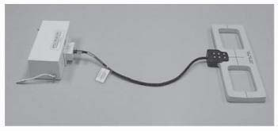
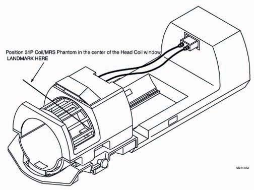
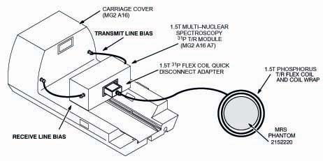

Operating Documentation
Direction 5440000, Rev# 5
Signa HDxt Service Methods
Module Version 1.0, Version Date 5/3/07
Operating Documentation |
| Required Persons | Preliminary Reqs | Procedure | Finalization |
|---|---|---|---|
| 1 | Not Applicable | Not Applicable | Not Applicable |
| Item | Qty | Effectivity | Part# | Manufacturer | |
|---|---|---|---|---|---|
| 1.5T (31P) Phosphorus Transmit/Receive Flex Coil | 1 | - | 2219090 | - | |
| 1.5T MNS 31P Flex Coil Quick Disconnect Adaptor Box | 1 | - | 46-282468G4 | - | |
| Short Wrap | 1 | - | 2248047 | - | |
| MRS Phantom (MR Spectroscopy) -MSDS # 8365823 | 1 | - | 2152220 | - | |
| Phosphorus Spectroscopy TR Module | 1 | - | 2100718 or 46-26476G1 | - | |
| Condition | Reference | Effectivity |
|---|---|---|
Magnet has been shimmed and acceptance specifications met | - | - |
Grafidy has been run and accepted specifications met | - | - |
1.5T Signa software fully operational | - | - |
Full pass of SPT has been performed and acceptance specification met | - | - |
PROBE SNR tests have been performed and acceptance specifications met | - | - |
System Health Test must pass (possibly excluding the EPI portion) | - | - |
All related MNSpectroscopy Option Key installed/activated | - | - |
Configuration file entries (BB Transceiver and MNSpectro RF Amplifier to yes) have been set | - | - |
1.5T Signa Multi-Nuclear Spectroscopy 31P hardware is fully calibrated and operational | - | - |
To begin this procedure ensure to have all tools needed
Refer to Illustration 1
Illustration 1: (31P) Phosphorus Transmit/Receive Flex Coil, MNS Q.D. BOX, and (31P) Spectroscopy TR Module

The flow chart in Illustration 2 shows sequence for Functional Checks of the (MNS) Multi-Nuclear Spectroscopy Subsystem.
Sections and tabs referred to in this chart are contained in this Direction unless otherwise left empty.
| NOTE: | Narrowband system performance checks must be performed and acceptance specifications must be verified. All Narrowband system performance problems must be resolved before Multi–Nuclear (MNS) Spectroscopy functional checks are performed. |
Illustration 2: Multi-Nuclear Spectroscopy Function Check Flow Chart

Place the Head Coil in the bore of the cradle. Connect the Head Coil Quick Disconnect Adaptor Box per normal operation. Refer to Illustration 3
Illustration 3: Head Coil Placement (High Profile Carriage Cover Shown)

Illustration 4: Setup for Functional Test Scan- In Head Coil (Not Shown)

Position 1.5T Phosphorus Spectroscopy TR Module (MG2A16A7) on Carriage Cover (MG2A16) as shown in Illustration 4
Verify the two (2) Lemo Cables (Receive Line and Transmit Line) are connected as shown in Illustration 4
Procure the MRS Phantom (2152220). Tightly wrap the 1.5T Phosphorus T/R Flex Coil around the MRS Phantom using the Short Coil Wrap. Center the MRS Phantom in 1.5T 31P T/R Flex Coil
Verify the 1.5T 31P T/R Flex Coil and 1.5T MNS 31P Flex Coil Q.D. Adapter Box are connected as shown in Illustration 4. DO NOT USE the extender Cable for Head Applications (looping is unacceptable)
Place the 1.5T 31P T/R Felx Coil and MRS Phantom inside the Head Coil. Position for landmarking perIllustration 3. Connect 1.5T 31P Flex Coil Q. D. Adapter Box to the 31P Spectroscopy TR Module
| ||||
| Do not leave the Spectroscopy TR Module installed (connected/disconnected) during non–spectroscopy scanning. The Spectroscopy TR Module will be installed during Proton localizer and Functional Test scans per this document using the 1.5T MNS 31P T/R Flex Coil and 1.5T MNS 31P Flex Coil Q. D. Adaptor Box, this is acceptable. Once the Multi–Nuclear Spectroscopy scanning has been completed and Narrowband scanning is resumed the Spectroscopy TR Module and associated hardware should be removed from the bore of the magnet. | ||||
Refer to Table 1. Setup the Proton Localizer Head scan prescription
| NOTE: | All Multi–Nuclear Spectroscopy users should be made aware that the foam pads contain a phosphorus flame retardant chemical. When scanning, the foam pads can be detected as a very small but broad peak. This could present a difficulty if you are scanning in vivo or if the user is trying to initially locate the phosphorus peak. |
Landmark on the center of the MRS Phantom (in the 1.5T 31P T/R Flex Coil) positioned in venter of the Head Coil in window opening per Illustration 3. Pad as required (A/P =0, R/L =0)
Select Advance to Scan
| ||||
| Look at the front of the ENI Amplifier in the RF/PEN or MNS Cabinet. If the Gating Button LED is continuously ON, press button to toggle LED OFF. This LED should only light when RF pulses (coincident with unblank) occur during scanning. If this Gating Button LED is always ON, the ENI Amplifier may be damaged and Multi–Nuclear Spectroscopy scanning can not occur. | ||||
| ||||
| Look at the front of the ANALOGIC Amplifier in the RF/PEN or MNS Cabinet. If the Power LED and Ready LED are not illuminated the system is not ready to scan. This Unblank LED should only light when RF pulses (coincident with unblank) occur during scanning. Do Not pulse the MNS system unless the Power and Ready LED’s are ON, otherwise, damage to the MNS hardware may occur. | ||||
Acquire the localizer image according to the scan prescription given in Table 1. Use the cross-hair function to verify phantom placement is at isocenter (A/P at 0, R/L at 0, S/I at 0)
| NOTE: | At the Workstation Monitor click on the magnet scanner icon. The ENTER key may need to be selected after directly entering a value when setting up protocols. Otherwise, the Accept button may be selected within the sub menu box. (Sub menu boxes are indicated with a ...) |
| NOTE: | It is acceptable to use the Service protocol O.58–31P Setup and Cal Series 1 localizer. |
Table 1: 8.X Proton Localizer Scan Protocol (Or Use Service Protocol)
| Scan Protocol (8.3) | |||
| RX Manager | Acquisition Timing | ||
| [End Exam] | Confirm | Freq | 256 |
| Enter the following or select the Service protocol | Phase | 160 | |
| New Patient | NEX | 1.00 | |
| [Patient Info] | Phase FOV | 1.00 | |
| Patient ID | geservice | Freq Dir | A/P |
| Patient Name | 31flex | Auto CF | Water |
| Patient Weight | 300 | Autoshim | [Select] |
| Patient Position - Please Landmark | Scanning Range | ||
| Patient Position | Supine | FOV | 24 |
| Patient Entry | Head First | Slice Thickness | 20 |
| Landmark | Nasion | Spacing | 1.5 |
| Coil-Coil Type | Head Accept | Start (S/I) | 0 |
| Imaging Parameter | End (S/I) | 0 | |
| Plane | Axial | # of Slices | 1 |
| Mode | 2D | L/R Center | 0 |
| P. Seq. | None Accept | P/A Center | 0 |
| Im. Op. | None Accept | Table Data | 0.00 |
| PSD Name | none | [Save Series] | |
| Scan Timing | [Prepare to Scan] | ||
| # of Echoes | 1 | [Scan] | |
| TE | Min Ful | [Research Operations] | |
| TR | 18 | [Setup Params] | |
| Flip Angle | 20 | Record: | |
| Bandwidth | 31.25 | R1:___ R2:___ TG:___ AX:___ | |
| Gradient Shim Values | |||
| X:___ Y:___ Z:___ | |||
| [Done] | |||
Setup the scan prescription per Table 2
| NOTE: | Do not select Auto Prescan or Manual Prescan during MNSpectro scanning. This will result in a false (low) signal display. If APS or MPS is accidentally selected re–prescibe the Proton Localizer to correct the problem. It is acceptable to use the Service protocol O.58–31P Setup and Cal Series 2. Verify all selections are correct. The Display CV dda=10 must always be entered. |
Table 2: 8.X Phosphorus Signal to Noise Test Scan Protocol
| RX Manager | Scanning Range | ||
| [New Series] | FOV | [24] | |
| Enter the following information or select the Service protocol | Slice Thickness | [20.0] | |
| Patient Information | Spacing | [1.5] | |
| Patient ID | geservice | Start (S/I) | 0 |
| Patient Name | 31flex | End (S/I) | 0 |
| Patient Weight | 300 | # of Slices | 1 |
| Patient Position | L/R Center | 0 | |
| Patient Position | Supine | P/A Center | 0 |
| Patient Entry | Head First | Table Delta | 0.00 |
| Coil Type | [Surface]P31_FLEX[Accept] | [Save Series] | |
| Imaging Parameters | [Prepare to Scan] | ||
| Plane | Axial | [Research Operations] | |
| Mode | 2D | Displays CVs | |
| Pulse Seq | Spin Echo (MRS)[Accept] | may need to select <enter> after the entries are made | |
| Imaging Opt | Extended Dynamic Range[Accept] | CV Name | dda |
| PSD Name | Current Value | 10[Accept] | |
| Additional Parameters | [Research Operations] | ||
| Scan Timing | Download | ||
| # of Echoes | 1 | [Spectro Prescan] | |
| TR | 4000 | Entry Point | single 1 |
| Flip Angle | 60 | Nucleus | 31 |
| User CVs Screen | R1 | 13 | |
| CV0 | spectral width 2500 | R2 | 30 |
| CV1 | number of points 1024 | TG | 0 |
| CV2 | nucleus 31 | AX | Default |
| CV3 | scan mode 1.00 | Top Screen | [Magnitude][Hz] |
| CV4 | total # of scans 128.00 | Bottom Screen | [Q Chan Raw][Pts] |
| CV5 | rl resolution for csi scans 1.00 | [Start] | |
| CV6 | ap resolution for csi scans 1.00 | Adjust TG to 20, 40, 80, 100, 120, 140, 150 | |
| CV7 | si resolution for csi scans 1.00 | Refer to the 2 displays and instructions provided to check the quality of the spectral data. Verify that the shim (free induction decay waveform) oscillates and decreases smoothly on the bottom screen. Verify a single peak is present in the top screen by utilizing the horizontal zoom function. Adjust shim as required per instructions | |
| CV14 | rfpulse (soft) 1.00[Accept] | [Stop] | |
| Acquisition Timing | [Done] | ||
| Nex | [2.00] | [Scan] | |
| Freq Dir | [R/L] | ||
| Auto CF | [Water] | ||
| Autoshim | [OFF] | ||
After selecting [Start]Verify the Top Screen is set to [Magnitude][Hz]Verify the Bottom Screen is set to [Q Chan Raw][Pts]
Verify TG is set at 150
Use the two displays on the Spectroscopy Screen to check the quality of the spectral data. The free induction decay waveform displayed on the bottom screen, “Q Chan Raw” should oscillate and decrease smoothly. A single peak should be displayed on the top screen, “Magnitude” The single peak should smoothly increase and decrease with no distortion at the top of the peak and a minimum of distortion around the bottom of the peak. The goal is a sing narrow, undistorted peak with maximum intensity. Typical Magnitude and Q Channel Raw displayes from the phosphorus phantom are shown below
Illustration 5: Initial Phosphorus Spectroscopy Screen

Screen Adjustments; Examine the peak on the Magnitude display more closely, locate the X Zoom control on the control panel just below the center of the top display screen, and click on the [X] button. Use the mouse to select and drag the left and right cursors that appear on the screen to define a “zoom” region around the peak. Select [Apply] to zoom to the selected region. Repeat this process as necessary to obtain a clear view of the peak. An example of a zoomed peak with distortion is shown below. A distorted peak may affect the results of the SNR test
Illustration 6: Dual Peak-Poor Shim

If the peak is distorted or split in the zoomed view, it may be possible to eliminate or decrease the distortion by manually adjusting the gradient shim settings. Start with the X Shim value; use the mouse to increase the X Shim value by one (1) unit (for example if the original value is 15, increase to 16). View the peak in the Magnitude display screen. There are three possible effects of the change in a shim value: 1 – the peak shape and intensity remain unchanged; 2 – the peak shape improves and the peak intensity increases; or 3 – the peak distortion increases and the peak intensity decreases. Obviously, you want to improve the shape and intensity of the peak (maximize the height of the peak by checking the numeric values at the left of the screen). Make the peak as narrow as possible. Your next step depends on which of the three effects that you see:
If the peak shape improves, increase the X Shim value by one (1) unit (in the example from 16 to 17) and repeat the examination of the peak shape.
If there is no change OR if the peak distortion increases, change the X Shim value to one (1) unit less than the original value (in the example from 16 to 14) and repeat the examination of the peak shape.
The idea is to improve the peak shape and peak intensity. Change the X Shim value to improve the peak shape, or leave the X Shim value unchanged if any change leaves the peak shape unchanged or increases the distortion. Once the X Shim value has been checked, change the Y Shim value in the same manner, and then change the Z Shim. If the one (1) unit changes have no effect on the peak shape, stop. If you have improved the peak shape repeat these steps starting with the X Shim again until any further changes have no effect or increase the distortion of the peak.
Select [Stop] and [Done]
Select [Scan]
Pre 8.3 sites will need to perform the Manual (8.2 clinical version) Script Method. Sites with Release 8.3 or greater may use the Quick Script Method or the 8.3 Software (or greater) Manual Method.
Select the [Tools] icon. If analysis is ongoing begin at Step 3 with sage entry
Select the [CShell...] and move the mouse to the open CShell window
Type in: sage<Enter>
SAGE WINDOW
Select:[File][Load][Raw Data]
RAW LOAD WINDOW
Select [Update List]
Select/Highlight the most recent raw file (P#####.7)
Record the raw file number in space provided at Phosphorus SNR Processing 8.2 Software Manual Script Method, Step 16 : P______________ .7
Select [Load]The data will load and the Active Dataset window will appearMove this window over to the top right-most portion of the screen
Select [Dismiss] at the Raw Load Window
SAGE WINDOW
Select[Macros][Func Tests][1.5T 31P SNR]
CShell Winterim WINDOW
Record the 1.5T 31P SNR results
AT THE SAGE WINDOW
If not continuing with other SNR testing then exit sage by selecting:[File][Exit SAGE]
CONFIRM WINDOW
Select:[Exit] to confirm exit from SAGE
This 6 to 7 minute procedure (8.2 clinical version) will determine the signal to noise levels during a Multi-Nuclear Spectroscopy scan. One scan was completed. Data from the scan will be loaded into SAGE and pre processed. The pre processed data will be analyzed using the SNR tool (secsi_snr) to find the signal to noise ratio.During this process it is acceptable to move the pop up window as required
Select the [Tools] icon. If analysis is ongoing begin at Step 3 with sage entry
Move the mouse to the background (brick area) screen and select:[Root Menu][Service Tools][Command Window]
Type in:source /usr/g/spectro/rsi/idl_5.1/bin/idl_setup<Enter>
SAGE VERSION 7.0 WINDOW
Select:[File][Load][Raw Data]
RAW LOAD WINDOW
Select [Update List]
Select/Highlight the most recent raw file (P#####.7)
Record the raw file number in space provided at Step 16: P__________ .7
Select [Load]The data will load and the Active Dataset window will appear.Move this window over to the top right most portion of the screen
SAGE VERSION 7.0 WINDOW
Select:[Processing][Spectral Aposize ...]Utilize <Delete> at the keyboard to remove the current LB entry. Change this from 1.2500 Hz to 3 Hz. <Delete> (as necessary) 3<Enter>[ Dismiss]
SAGE VERSION 7.0 WINDOW
Select:[Recons][Spectrum ...]
SPECTRUM RECONSTRUCTION WINDOW
Verify the Spectrum Reconstruction window now has the following selections:Apodize: YesFunction: GuassianEcho Offset: 0%LB: 3.0000 Hz (Verify this value is now correct)ZEROFILL*: YesZerofill: 1 timesPlace Zeros: Right
Select:[Reconstruct]
| NOTE: | Verify the Active Dataset window data changes from a FID looking waveform to a spectrum-like waveform |
SAGE VERSION 7.0 WINDOW
Select:[Processing][Phase ...]
PHASING WINDOW
In the Zero Order Auto Phase panel select:In the Auto Application are click on upper left corner of the “selection box” and select [Global]In the Auto Method are click on upper left corner of the “selection box” and select [Simplex] select [Auto Phase]
| NOTE: | The peak displayed will point upwards |
[Dismiss] the Phasing window
AT THE SAGE VERSION 7.0 WINDOW
Select:[File][Save][Data ...]
LOAD/SAVE WINDOW
Record the following information:Site: __________Study: ___________Series: ____________File: P____________ .7_proExample:Site specification information:Site: bay3aStudy: 50886Series: 2File: P03584.7_pro
Select:[Save Data][Dismiss] the Load/Save window
SAGE VERSION
Select: [File][Exit SAGE]
CONFIRM WINDOW
Select:[Exit] to confirm exit from SAGE
COMMAND WINDOW (labeled Terminal)
Refer to the recorded information for your systemType the following:cd /usr/g/spectro/sage/func_test<enter>idl -rt=secsi_snr.sav<enter>
AT THE PROMPT
| NOTE: | Refer to the recorded information from the Load/Save window in Step 16. [Site, Study, Series, File] |
Enter Transformed Data Filename: Type in the following:/usr/g/spectro/data/bay3a/gesrvice/50886/2/P30584.7_pro.sdf<enter>
This 6 to 7 minute procedure (8.3 software or greater) will determine the signal to noise levels during a Multi–Nuclear Spectroscopy scan. One scan was completed. Data from the scan will be loaded into SAGE and pre processed. The pre processed data will be analyzed using the SNR tool (secsi_snr) to find the signal to noise ratio. During this process it is acceptable to move the pop up windows as required.
Select the [Tools] icon. If analysis is ongoing begin at Step 3 with sage entry
Select the[ CShell ...] and move the mouse to the open CShelll window
Type in: sage<Enter>
SAGE WINDOW
Select:[File][Load][Raw Data]
RAW LOAD WINDOW
Select [Update List]
Select/Highlight the most recent raw file (P#####.7)
Record the raw file number in space provided at Step 16: P_____________ .7
Select:[Load]The data will load and the Active Dataset window will appear.Move this window over the top right most portion of the screen
SAGE WINDOW
Select [Processing][Spectral Apodize ...] Utilize [Delete] at the keyboard to remove the current LB entry. Change this from 1.2500 Hz to 3 Hz. [Delete] (as necessary) 3<enter>
Select: [Recons][Spectrum ...][Dismiss]
SPECTRUM RECONSTRUCTION WINDOW
Verify the Spectrum Reconstruction window now has the following selection:Apodize: Yes Function: Gaussian Echo Offset: 0% LB: 3.0000 Hz (Verify this value is now correct) ZEROFILL*: Yes Zerofill: 1 times Place Zeros: Right
Select Reconstruct
| NOTE: | Verify the Active Dataset window data changes from a FID looking waveform to a spectrum–like waveform. |
SAGE VERSION 7.0 WINDOW
Select: [Processing][Phase ...]
PHASING WINDOW
In the Zero Order Auto Phase panel selectIn the Auto Application are click on the upper left corner of the “selection box” and select [Global]In the Auto Method are click on the upper left corner of the “selection box” and select [Simplex]
| NOTE: | The peak displayed will point upwards |
[Dismiss] the Phasing Window
SAGE VERSION 7.0 WINDOW
Select:[File][Save][Data ...]
LOAD/SAVE WINDOW
Record the following information:Site: __________Study: ___________Series: ____________File: P____________ .7_proExample:Site specification information:Site: bay3aStudy: 50886Series: 2File: P03584.7_pro
Select:[Save Data][Dismiss] the Load/Save window
SAGE WINDOW
Select:[Macros][Func Tests][1.5T 31P SNR]
CShell Winterin WINDOW
Record the 1.5T 31P SNR results:
AT THE SAGE WINDOW
If not continuing with other SNR testing then exit sage by selecting:[File][Exit SAGE]
CONFIRM WINDOW
Select:[Exit] to confirm exit from SAGE
The SNR value using the 1.5T 31P T/R Flex Coil should be at least TBD for n=1, and at least TBD for n=64. Record SNR results below. It is recommended that Spectroscopy related SNR tests are performed at least 3 times to get a good system performance average
| Coil Type: 1.5T 31P TR Flex Coil | Coil S/N:____________ Date of Test: _____________Study/Series/Image:__________ P#: P_______ .7_pro.sdfTEST: Inthe Head COil, No Extender Cable-pad up to center-run localizer | |||||
| n# | Area~5.e+06 ~1.0e+06 | Amp | Noise | AreaSNR | AmpSNR | Amp SNR(preliminary spec.) |
| 1 | >130 | |||||
| 2 | >184 | |||||
| 4 | >260 | |||||
| 8 | >368 | |||||
| 16 | >520 | |||||
| 32 | >736 | |||||
| 64 | >1040 | |||||
The results of the 31P SNR tests will vary from run to run (by approxiamately 30 counts as referenced to the first specification listed). It is advisable to save all of the results of the 31P SNR test for future reference.
Enter the “User CVs” Screen
Change CV4 “total # of scans” value to 4. Four is the lowest acceptable value which can be entered and be analyzed successfully. Scan time for troubleshooting is reduced to approximately 1 minute.
Remove the Head Coil from the bore
Connect the 1.5T 31P T/R Flex Coil and Q.D. Adaptor Box to the Spectroscopy TR Module
The MRS Phantom should be used with the short wrap. Pad up to isocenter as required
Setup a Body proton Localizer scan protocol. Verify the phantom is properly centered. Select APS and Scan
Immediately setup the 8.X Phosphorus Signal to Noise Test Scan Protocol. Do not select the APS Softkey
[Spectro Prescan]. [Start]. Manual Shim as required. Verify only 1 peak is present. [Stop]. [Scan]
Analyze the SNR results. If the Body Functional Test passes the SNR specification with significally higher values than the SNR test run in the Head Coil the site may be experiencing some type of Head Coil interaction
| NOTE: | The results of the 31P SNR tests will vary from run to run (by approximately 30 counts as referenced to the first specification listed) |
The Phosphorus Noise Floor Check Test is performed using the 1.5T 31P T/R Flex Coil and Q.D. Adaptor Box connected to the Spectroscopy TR Module. The 1.5T 31P T/R Flex Coil is positioned inside the Head Coil. No phantom or RF is used. The results of this noise test may be effected by future hardware/software system changes.
RF Output switch on the front of the System Cabinet UCERD is moved from RF Out Normal to RF Out Disable.
1.5T 31P T/R Flex Coil and Q.D. Adaptor Box connected to the Spectroscopy TR Module. The 1.5T 31P T/R Flex Coil is positioned inside the Head Coil. Landmark on center of coils.
Disable the RF Out on the UCERD front panel
Remove all phantoms from the patient table. This is an empty bore test
Connect the 1.5 T 31P T/R Flex Coil and Q.D. Adaptor Box to the Spectroscopy TR Module
Position the 1.5T 31P T/R Flex Coil inside the Head Coil
Landmark on the center of both coils, then press Move to Scan
At the operator work space, prepare the system for a Phosphorus Noise Floor scan. Setup the scan prescription per Table 3
Table 3: 8.X Phosphorus Signal to Noise Test Scan Protocol
| RX Manager | Acquisition Timing | ||
| [New Series] | Freq | [256] | |
| Enter the following: | Phase | [192] | |
| Patient Information | Nex | [1.00] | |
| Patient ID | geservice | Freq Dir | [S/I] |
| Patient Name | 31flex | Auto CF | [Water] |
| Patient Weight | 111 | Select | [Autoshim] |
| Patient Position | Scanning Range | ||
| Patient Position | Supine | FOV | [24] |
| Patient Entry | Head First | Slice Thickness | [20.0] |
| Coil Type | [Surface]P31_FLEX[Accept] | Spacing | [1.5] |
| Imaging Parameters | Start (S/I) | 0 | |
| Plane | Axial | End (S/I) | 0 |
| Mode | 2D | # of Slices | 1 |
| Pulse Seq | Fid CSI (MRS) [Accept] | L/R Center | 0 |
| Imaging Opt | Extended Dynamic Range[Accept] | P/A Center | 0 |
| PSD Name | Table Delta | 0.00 | |
| Additional Parameters | [Save Series] | ||
| Scan Timing | [Prepare to Scan] | ||
| # of Echoes | 1 | [Research Operations][Download] | |
| TR | 300 | [Spectro Prescan] | |
| User CVs Screen | Entry Point | single 1 | |
| CV0 | spectral width 16000 | Nucleus | 31 |
| CV1 | number of points 2048 | R1 | 13 |
| CV2 | nucleus 31 | R2 | 30 |
| CV3 | scan mode 0.00 | TG | 0 |
| CV4 | total # of scans 1.00 | AX | Default |
| CV5 | rl resolution for csi scans 1.00 | Top Screen | [Magnitude][Hz] |
| CV6 | ap resolution for csi scans 1.00 | Bottom Screen | [Q Chan Raw][Pts] |
| CV7 | si resolution for csi scans 1.00 | [Start] | |
| CV14 | rfpulse (soft) 1.00[Accept] | [Done] | |
| CV 16 | CSI grid: (acq) 2.00[Accept] | [Scan] | |
| Scan time is approximately 1 minute. When scan is complete proceed to Analysis section | |||
The Phosphorus Noise Floor Check Test is a preliminary test re introduced with 8.3 Release software. It is performed using the 1.5T 31P T/R Flex Coil and Q.D. Adaptor Box connected to the Spectroscopy TR Module. The 1.5T 31P T/R Flex Coil is positioned inside the Head Coil. No phantom or RF is used. The results of this noise test may be effected by future hardware / software system changes.
Go to the Image Managing Desktop (looks like a terminal with images displayed)
Locate the [Browser] selection. Select by clicking on [Browser]
Locate and select the proper Exam, Series, and Image
After the Noise Floor Image has been selected, click on [Viewer]. The Noise Floor Image will pop up
Locate the [Measure] selection. Select by clicking on [Measure]. Select the round cursor
Create a round cursor to cover a ROI are between 30000 and 40000 mm2
To size the circle select the small box with the mouse and drag
To position the circle select the circle with the mouse and drag to center the circle in the Noise Floor Image
Record the ROI, mean value, and sd (standard deviation) value in Table 4
Table 4: 8.X Phosphorus System Noise Floor Data Sheet
| ROI (mm2) | ROI between 30000 and 40000 mm2 |
| mean | Mean Noise approximately ~ 40.7 |
| sd | No specification ~ 20.7 |
Proceed to next section or System Restoration
At the Penetration Panel, bypass the 20dB Gain Block
Perform the Phosphorus System Noise Floor Check section
Perform the Phosphorus System Noise Floor Image Analysis section, however, use Table 5
Table 5: 8.X Phosphorus System Noise Floor Data Sheet (Bypass 20dB Gain Block)
| ROI (mm2) | ROI between 30000 and 40000 mm2 |
| mean | Mean Noise approximately ~ 2.7 |
| sd | No Specification ~ 1.4 |
If all the values pass then consider replacing the 20dB Gain Block and running the test again
Try the following, in order, if still not passing the noise floor test after bypassing the 20dB Gain Block:
Swap the head heliax line and the MNS heliax line input and output connections at the rear of the System Cabinet and in the rear pedestal.
Swap the head receive cabling and the MNS receive cabling input and output connections at the rear of the System Cabinet and in the rear pedestal.
Verify and record the grafidy and shim calibration numbers.
Try swapping out the J109 cable that connects to the front of the UCERD.
Try swapping out the UCERD Exciter.
If the above actions have not yielded results then contact the OLC for support.
Proceed to System Restoration
RF Output switch on the front of the System Cabinet UCERD is moved from RF Out Disable to RF Out Normal.
Remove hardware: 1.5T 31P T/R Flex Coil, Q.D. Adaptor Box, Spectroscopy TR Module, and the Head Coil.
No finalization steps.